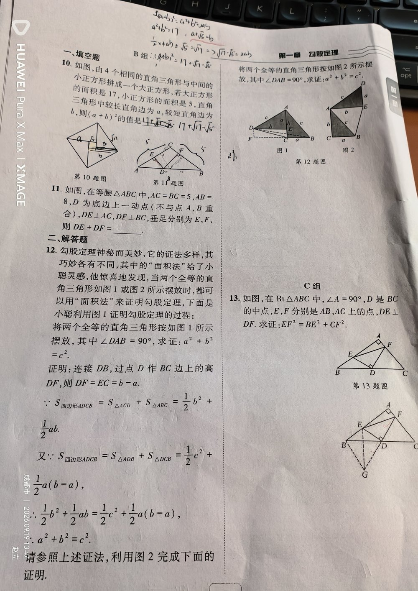

① Rt△ABC，∠A = 90°； ② D 是斜边 BC 的中点； ③ E 在 AB 上，F 在 AC 上； ④ DE ⊥ DF。
求证 EF² = BE² + CF²。
【关键辅助线】倍长中线（把 FD 延长一倍）+ 全等转移线段。 证明： ① 延长 FD 到 G，使 DG = DF，连接 BG、EG； ② ∵ D 是 BC 中点 ⇒ BD = CD；又 ∠BDG = ∠CDF（对顶角），DG = DF， ∴ △BDG ≅ △CDF（SAS）⇒ BG = CF，∠DBG = ∠C； ③ ∵ ∠A = 90° ⇒ ∠ABC + ∠C = 90° ⇒ ∠ABC + ∠DBG = 90° ⇒ ∠ABG = 90°； ④ ∵ DE ⊥ DF 且 DG = DF ⇒ DE 是 FG 的垂直平分线 ⇒ EF = EG； ⑤ 在 Rt△EBG 中，由勾股定理：EG² = BE² + BG² = BE² + CF² ⇒ EF² = BE² + CF²。证毕。
① 想不到“倍长中线”这条辅助线（见中点 + 垂直，要想到垂直平分线模型）； ② 无法把 BE、CF 搬到同一个直角三角形里（这是本题最大的障碍）； ③ 写全等时对应顶点顺序错乱，导致边、角对应错； ④ 得到 EF = EG 后，忘记说明 DE 是 FG 的垂直平分线这一步的依据； ⑤ 最后一步忘记回到 EF² 的结论（EG 要换成 EF）。
倍长中线（中线倍长）辅助线作法； 全等三角形的判定（SAS）与性质； 线段垂直平分线的性质； 勾股定理； 等量代换 / 线段转移的证明思想。